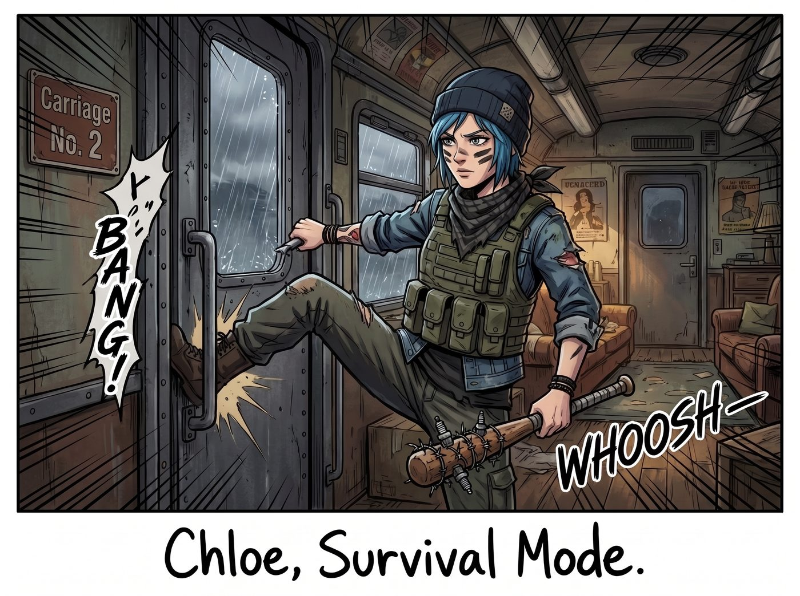
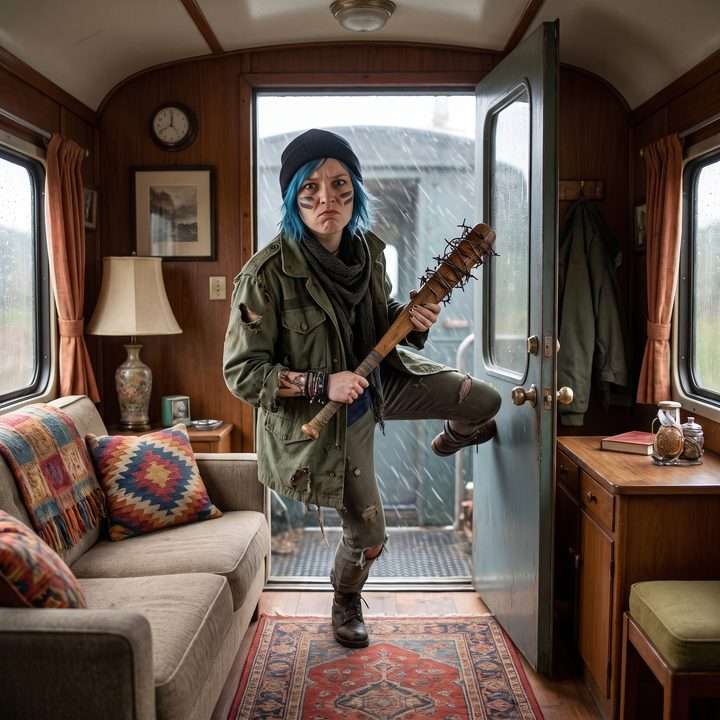
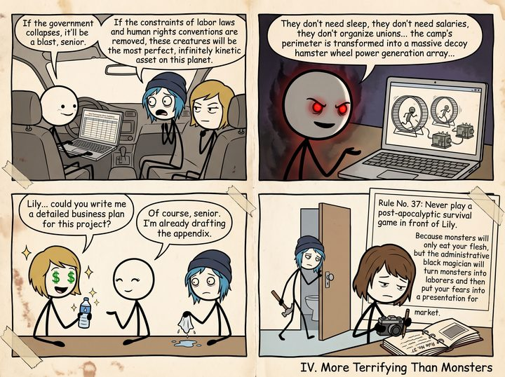

亡者動能



奧林匹亞半島的連綿陰雨，很容易把人關出幽閉恐懼症。為了對抗這種無聊，Chloe 決定人為製造一點生存危機。
「砰！」二號車廂的門被一腳踹開。一陣冷風夾雜著雨水灌了進來。
Chloe 站在門口，穿著一件破爛的軍綠色戰術背心，臉頰上塗著兩道用引擎廢機油畫出來的迷彩戰損妝，脖子上纏著一條方巾。她手裡甚至還提著一把用棒球棍、生鏽鐵絲和火星塞自製的碎顱錘。
一、被戳破的末日幻想
「全體戒備！生存者們！」Chloe 壓低了嗓音，用一種刻意模仿末日題材電視劇裡硬漢主角的沙啞語調嘶吼道，「第一道防線已經被突破！我剛才在東南方向發現了異常蹤跡！立刻打包妳們的生存物資，我們只有五分鐘時間撤離，或者留下來死戰！」
然而，車廂裡的氣氛安靜得令人尷尬。
Victoria 穿著一襲香檳色的真絲睡袍，臉上敷著一張黑色的泥膜，手裡端著一杯插著檸檬片的氣泡水。她冷冷地瞥了 Chloe 一眼，語氣毫無波瀾：「Chloe，如果妳那把沾滿破傷風細菌的棍子碰到我的地毯，我就把妳當成感染源，用漂白水給妳做個全身灌腸。」
在廚房區，Kate 轉過身，身上繫著一條粉紅色的小碎花圍裙。她看著殺氣騰騰的 Chloe，不僅沒有害怕，反而露出了一個無比溫柔的笑容。「敵人來了嗎？太好啦。」Kate 開心地從烤箱裡端出一個烤盤，「我剛好在練習做萬聖節主題的翻糖餅乾。妳覺得他們會喜歡吃這個沒有腦漿、但有蔓越莓果醬內餡的無麩質小腦袋嗎？」
坐在沙發上的 Max 則默默地舉起寶麗來相機，喀嚓一聲，拍下了 Chloe 尷尬地舉著棒球棍、像個闖入高檔下午茶派對的流浪漢一樣的滑稽畫面。
「妳們這是什麼態度？！」Chloe 的末日角色扮演體驗感被徹底粉碎了。她氣急敗壞地把碎顱錘扔在沙發上，抹了一把臉上的機油：「這可是末日！文明已經崩潰！妳們難道就不能表現出一點求生欲嗎？」
二、邏輯漏洞
就在這時，Lily 端著一杯熱牛奶，從她的多螢幕工作站後走了出來。
「Chloe 學姐，您的角色扮演設定存在一個嚴重的邏輯漏洞。」Lily 平靜地走到 Chloe 面前，遞給她一張濕紙巾示意她把臉上的機油擦掉。
「什麼漏洞？」Chloe 不服氣地瞪著她。
「首先，」Lily 豎起一根蒼白的手指，「從行政合規的角度來看，所謂的異常威脅，在法律定義上只不過是未經授權的、缺乏認知能力的生物學實體。如果他們敢踏入我們營地的隔絕範圍，就會觸發我們自己的安全警報。」
「那……那如果政府真的癱瘓了呢！只有我們自己！」Chloe 固執地維護著她的廢土幻想。
三、末日商業版圖
「如果政府癱瘓，那就是一場狂歡了，學姐。」Lily 嘴角勾起一抹極度純潔、卻讓在場所有人都打了個冷顫的微笑。她轉身打開筆記本電腦，調出了一份名為《極端生物災害下的資產重組與勞動力剝削預案》的試算表。
「如果失去了勞動法和人權公約的限制，這些生物將是這個星球上最完美的無限動能資產。」Lily 的手指在螢幕上輕輕滑動，向目瞪口呆的 Chloe 展示她的商業版圖：
「他們不需要睡眠，不需要薪水，不會組織工會，也沒有勞動監察機構來查水表。我們會將營地外圍改造成大型的誘餌式倉鼠輪發電陣列。只要在他們面前掛一塊帶血的生肉，他們就能二十四小時不間斷地在輪子裡奔跑，為我們提供源源不絕的免費綠色能源。」
Lily 越說越興奮，眼神中閃爍著行政黑魔法的終極奧義：「我們甚至可以註冊一家名為亡者動能的能源公司。因為我們的員工全部是醫學意義上的死者，我們不僅可以完美避開所有的員工醫療保險和養老金支出，還能向重組後的新政府申請殘障與邊緣群體就業免稅額度。不出三年，Victoria 學姐，您的家族信託就能壟斷整個地區的廢土能源市場。」
車廂裡死一般的寂靜。
Victoria 放下氣泡水，眼神裡竟然閃爍著資本家看到暴利的狂熱光芒：「Lily……這個計畫，妳能寫份詳細的商業計畫書給我嗎？」
「當然，學姐。我已經在起草附錄了。」Lily 乖巧地點頭。
四、比怪物更可怕
Chloe 坐在沙發上，手裡那張用來擦臉的濕紙巾掉在了地上。
她看著那個正一本正經地和 Victoria 討論如何合法壓榨免費勞動力並進行大規模避稅的行政少女，突然覺得毛骨悚然。
在 Chloe 的幻想裡，末日是血肉橫飛的戰鬥、是背靠背的兄弟情誼、是拿著霰彈槍在廢墟裡尋找罐頭的浪漫狂野。但在 Lily 的世界裡，末日只不過是撕毀了舊勞動法，為她提供了一批零成本的、永遠不會抱怨的永動機奴隸，以及一場沒有監管的資本主義狂歡。
與 Lily 這種把怪物按在發電輪裡榨乾最後一絲剩餘價值、還要拿去抵稅的終極資本家相比，那些只會咬人的怪物，簡直單純、可愛得像個天使。
「我……我去洗個臉。」Chloe 徹底放棄了她的廢土生存遊戲。她默默地拎起那把碎顱錘，像一個被打敗的喪家之犬，灰溜溜地走進了洗手間。
Max 看著 Chloe 挫敗的背影，又看了看正在認真修改商業計畫書的 Lily，默默地在她的寶麗來相簿空白處寫下一行字：
『規則第三十七條：永遠不要在 Lily 面前玩末日生存遊戲。因為怪物只會吃妳的肉，但行政黑魔法師會把怪物變成打工仔，然後把妳的恐懼做成簡報去上市。』